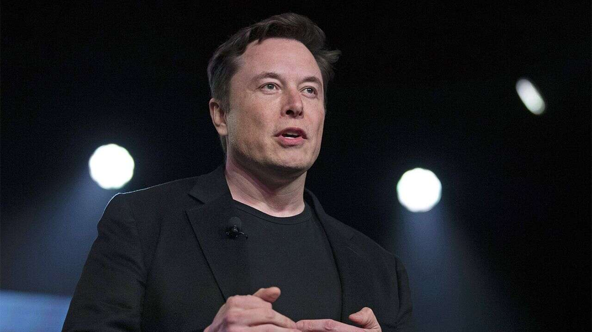

ELON MUSK
A MAN'S VISION TO CHANGE THE WORLD

CEO of Tesla Motors and SpaceX
His journey so far:
- 1971 - Born and raised in Pretoria, South Africa
- 1983 - He taught himself computer programming at the age of 10, and by the age of 12 sold the code of a video game he created called Blastar, to a magazine for approximately $500
- 1992 - Started studying business and physics at the University of Pennsylvania
- 1995 - Musk and his brother, Kimbal, started Zip2 and Compaq acquired Zip2 for US$307 million in cash
- 1999 - Musk co-founded X.com, an online financial services and e-mail payment company which is now known as PayPal
- 2002 - With US$100 million, Musk founded SpaceX
- 2006 - Musk provided the initial concept and financial capital for SolarCity which by 2013, was the second largest provider of solar power systems in the United States
- 2008 - Tesla Motors first built an electric sports car, the Tesla Roadster
- 2015 - SpaceX made a significant step towards rocket reusability lowering the costs of access to space
- 2016 - SolarCity was acquired by Tesla and is currently a wholly owned subsidiary
- 2018 - SpaceX successfully launched the Falcon Heavy, the fourth-highest capacity rocket ever built and the most powerful rocket in operation as of 2018